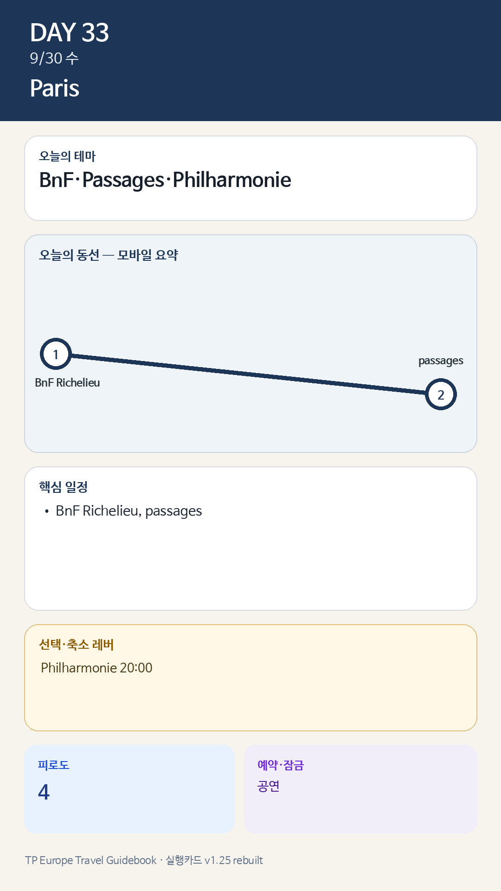

Day 33 · 9/30 수 · Paris
- 핵심 실행
- BnF·Passages·Philharmonie
- 권장 출발
- 10:00 전후
- 완충
- 공연 전 2시간 휴식·식사
시간표
| 시간 | 일정 | 실행 포인트 |
|---|---|---|
| 09:00–10:30 | 느린 아침·숙소업무 | 다음 날 오페라를 위해 수면 보존 |
| 11:30–12:30 | 가벼운 점심 | 혼잡한 권역 진입 전 식사 |
| 13:00–14:00 | Palais de Tokyo 권역 | 건축·공공공간·거리 분위기. 전시는 날짜·장소가 공식 확인된 경우에만 |
| 14:00–15:15 | Avenue Montaigne | 쇼윈도·거리 관찰, 매장 입장 집착 금지 |
| 15:30–17:00 | Rue Saint-Honoré | 공개 팝업이 공식 발표됐을 때 한 곳만 교체 |
| 17:00–18:00 | Palais Royal | 회랑·정원에서 마무리, 스케치·카페 |
| 18:30 이후 | 숙소 귀환·가벼운 저녁 | Philharmonie·야간행사 제외 |
피로도
3/5
이 날의 메모
Paris Fashion Week — 공개 공간으로 읽는 패션 반일 고정 경험
8/5 현재 FHCM은 9/30 일반 공개행사를 게시하지 않았다. 초청제 쇼·SPHERE 업계 쇼룸을 일반 입장처럼 표시하지 않는다.
상세 실행 확인
- 최고 리스크
- 낮+야간 복합일
- 우선 삭제
- passages 일부
- 대체안
- BnF 축소·공연 유지
- 식사·휴식
- Passages/숙소권
- 잠금 필요
- Philharmonie
모바일 카드 이미지

카드의 지도영역은 일정 순서를 보여주는 개요이며 내비게이션이 아닙니다. 실제 도보·운전 경로는 Google Maps에서 다시 계산하세요.